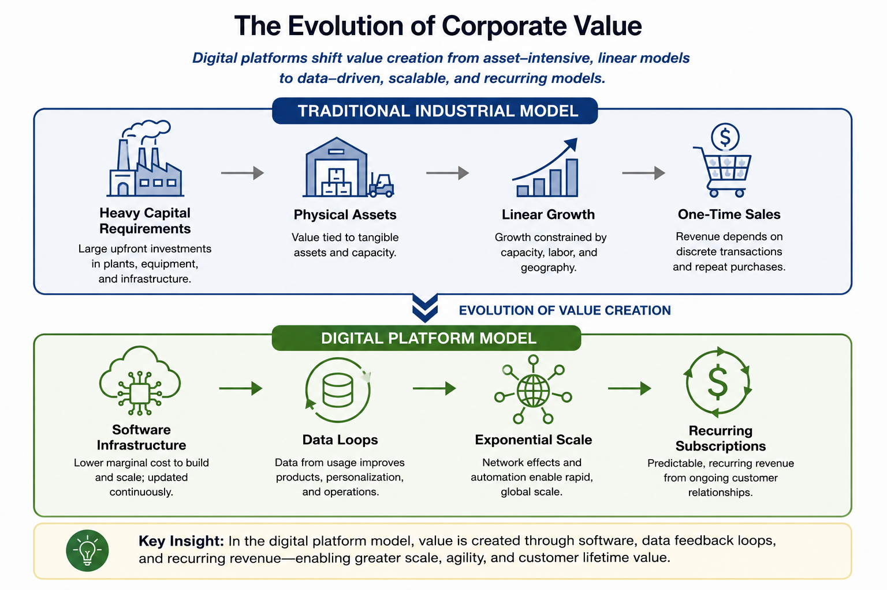
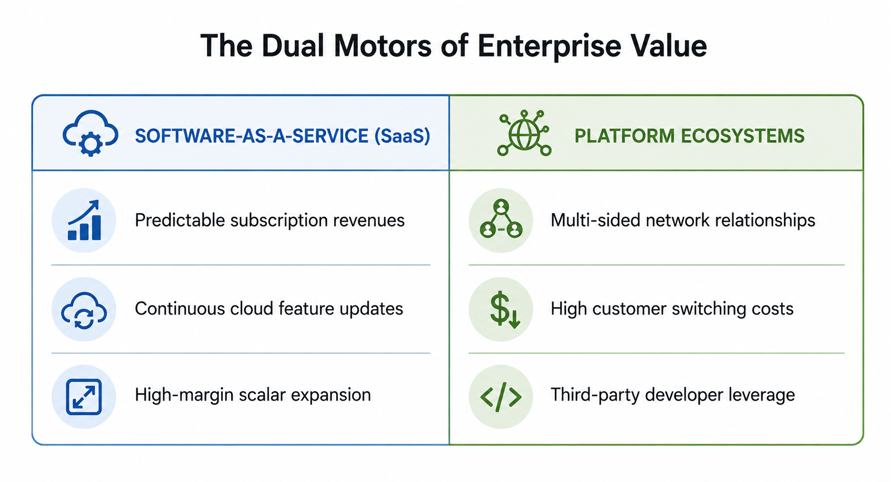
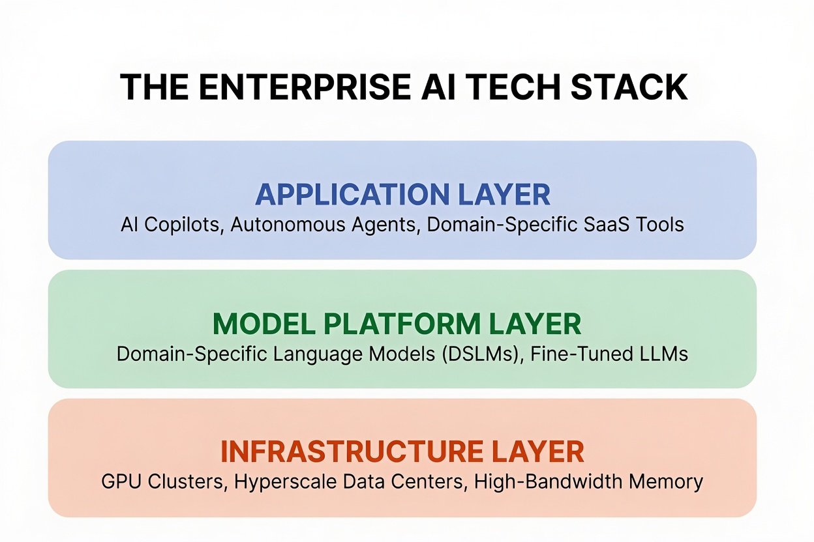
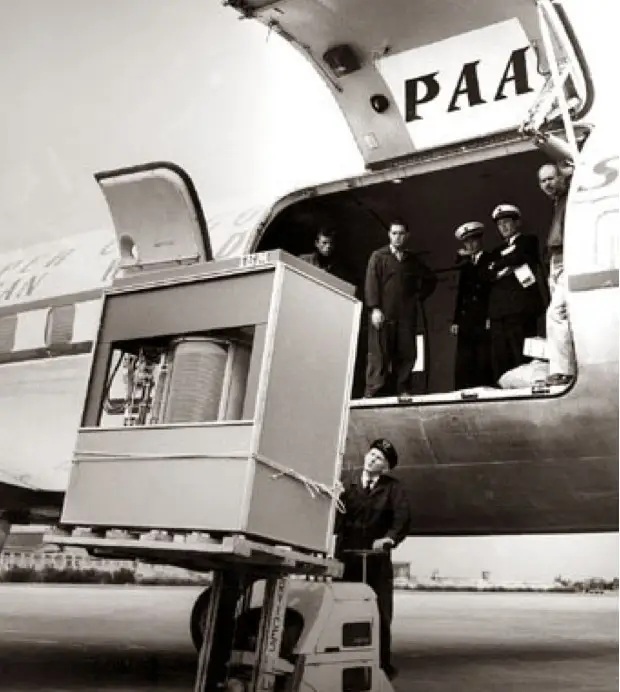

1.1 Technology and the Modern Enterprise
How Information Systems Drive Modern Enterprise Strategy
The Tectonic Shifts of Modern Enterprise
In late December 2022, a brutal winter freeze swept across the United States, bringing extreme cold, heavy snow, and high winds at the peak of the holiday travel season1. Every commercial airline scrambled to adjust, yet almost all of them managed to recover their footing within a matter of hours2. United Airlines, for example, canceled approximately 36% of its flights during the worst of the storm but still managed to get 90% of its passengers to their destinations within four hours of their scheduled times2.
At Southwest Airlines, however, the operational situation disintegrated into the costliest scheduling meltdown in the history of commercial aviation1. Over the course of ten days, Southwest canceled more than 16,900 flights, leaving over two million passengers stranded in airport terminals1. The financial toll was staggering, ultimately costing the company between $1.1 billion and $1.2 billion in lost revenues, passenger reimbursements, and a record-setting $140 million civil penalty from the U.S. Department of Transportation1.
The root cause of this historic operational failure was not the weather1. Instead, it was the collapse of Southwest's internal information systems under the weight of decades of accumulated technical debt2. While Southwest had grown into the third-largest domestic carrier in the United States, its technological infrastructure had failed to keep pace with its expansion1. The airline’s crew scheduling system, a legacy software program called SkySolver, was designed to optimize crew reassignments during standard, localized disruptions3.
However, because Southwest operates a point-to-point network rather than a hub-and-spoke system, a single delay cascades across a long, linear chain of flights1. When the winter storm hit, the scheduling software could not handle the sheer volume of changes7. The system’s database became entirely decoupled from physical reality—essentially losing track of where pilots and flight attendants were located1.
Because the software lacked real-time, automated updates, the airline was forced to revert to manual phone coordination4. Schedulers had to comb through spreadsheets and field individual phone calls from thousands of idle pilots and flight attendants5. The phone lines jammed completely, forcing crew members to wait on hold for up to nine hours just to report their status2.
The physical assets—the aircraft and the crews—were fully available, but the digital brain that coordinated them had fractured6. This structural failure demonstrates a fundamental rule of the modern business landscape: operational excellence is entirely dependent on the strength, scalability, and design of an organization's information systems2.
| Operational Metric | Southwest Airlines | Peer Carriers (Average) |
|---|---|---|
| Cancellations during Crisis | Over 16,900 flights (60%+ of schedule on peak days)1 | Rapid recovery within 24-48 hours of storm passage1 |
| Primary Failure Mechanism | SkySolver database decoupling, manual phone coordination1 | Automated hub-and-spoke crew recovery systems2 |
| Crew Status Wait Times | Up to 9 hours on hold via analog voice lines2 | Digital self-service check-in and automated reassignment |
| Total Financial Loss | $1.1 Billion – $1.2 Billion1 | Minor seasonal earnings impact |
| Regulatory Civil Penalty | $140 Million (largest in DOT history)1 | $0 |
In sharp contrast to this cautionary tale sits the strategic turnaround of Domino’s Pizza10. In 2008, Domino’s was facing an existential brand crisis11. Consumer sentiment had hit an all-time low; focus groups routinely compared the company's product to "cardboard," and employees posted viral videos exposing unsanitary kitchen conditions11. The company's stock price hovered under $10 per share10.
Under the leadership of Chief Executive Officer Patrick Doyle and Chief Digital Officer Dennis Maloney, Domino’s launched a dual-pronged recovery plan10. First, the company publicly admitted its culinary failures, completely reformulated its core recipes, and invited the public to watch the transformation in real time10.
Second, and more importantly, Domino's transformed its identity11. The executive team recognized that in a convenience-driven market, digital interactions were the primary driver of customer loyalty11. Domino's began operating like a Silicon Valley software house rather than a quick-service restaurant chain, declaring itself "a technology company that delivers pizza"12.
Domino's invested heavily in custom digital platforms, bypassing third-party delivery aggregators to maintain direct ownership of its customer data15. The company introduced the "Pizza Tracker" to give consumers real-time transparency into kitchen operations and developed the "Anyware" platform10. Anyware allowed consumers to order food seamlessly from smartwatches, Amazon Alexa, Apple CarPlay, or even by texting a single pizza emoji16.
Behind the scenes, the firm deployed predictive analytics and artificial intelligence to optimize logistics, automate inventory, and refine delivery routes11.
The results were unprecedented. Same-store sales surged, and the brand permanently repositioned itself as a premium technology and quality leader10. By 2017, Domino's stock price had risen from under $10 to over $400, outperforming tech giants like Apple, Amazon, Google, and the rest of the FAANG cohort over that same ten-year window10.
The lesson is clear: information systems are not merely administrative tools to be managed by an isolated IT department12. When properly aligned with business strategy, they are the single most powerful driver of competitive advantage, operational agility, and long-term enterprise value4.
The Southwest and Domino's examples show two sides of enterprise technology: systems can become a liability when neglected or a source of advantage when aligned with strategy. The next question is why the market increasingly rewards firms that treat software, data, and platforms as central assets.
The Tech-Driven Economy: Why the World's Biggest Firms Are Now Tech Companies
Step inside the cab of a modern John Deere tractor, and you are not just looking at diesel power and heavy steel. You are stepping into a high-performance supercomputer on wheels.
Equipped with high-resolution cameras, edge-computing processors, and advanced computer vision algorithms, Deere’s "See & Spray" technology can differentiate between target crops and invasive weeds in milliseconds, precision-spraying herbicide only where needed60. Deere is no longer just a machinery company; it is an advanced AI and software engineering powerhouse60. The company has publicly committed to generating 10 percent of its annual revenue from recurring software subscriptions by 203061.
This transformation illustrates a fundamental shift in modern commerce: technology is no longer a back-office utility designed to automate routine paperwork. Information technology (IT) has become the primary engine of corporate strategy, market valuation, and global economic expansion62.
Figure 1.1a The Evolution of Corporate Value

Source: author
Show long description
The figure is titled “The Evolution of Corporate Value” and is arranged as a two-part comparison on a white background. The top half is labeled “Traditional Industrial Model.” It shows a left-to-right sequence of four rounded boxes connected by arrows: “Heavy Capital Requirements,” “Physical Assets,” “Linear Growth,” and “One-Time Sales.” This top row presents the idea that value in the industrial model depends on large up-front investment in physical resources and tends to grow more slowly and linearly.
A downward arrow in the center marks a shift toward a different model. The bottom half is labeled “Digital Platform Model.” It also shows four rounded boxes connected by arrows from left to right: “Software Infrastructure,” “Data Loops,” “Exponential Scale,” and “Recurring Subscriptions.” This bottom row shows that value in the platform model comes from software, data feedback, and the ability to scale quickly while earning recurring revenue.
A brief note near the bottom states that digital platforms can create value through software, data feedback loops, and recurring revenue. The overall purpose of the figure is to contrast a traditional asset-heavy business model with a digital platform model driven by feedback and scale.
The Great Economic Realignment
To appreciate how thoroughly technology has rewritten the rules of global business, consider how the world’s leaderboard of corporate value has shifted over the past quarter-century64.
At the turn of the millennium, the most valuable public companies measured by market capitalization—the total dollar value of a firm’s outstanding shares of stock—were industrial conglomerates, oil producers, and traditional brick-and-mortar retailers64. General Electric, ExxonMobil, and Walmart set the pace for business scale65.
| Rank | Top Companies by Market Cap (Jan 2000) | Top Companies by Market Cap (Recent Period) | Core Drivers of Modern Valuation |
|---|---|---|---|
| 1 | Microsoft ($606B)65 | Nvidia ($4.5T – $5.0T+)66 | AI infrastructure, GPU accelerators, parallel computing stack64 |
| 2 | General Electric ($508B)65 | Apple ($4.0T – $4.8T)66 | Integrated hardware platforms, consumer ecosystem, services64 |
| 3 | NTT Docomo ($367B)65 | Alphabet / Google ($3.8T – $4.2T)66 | Search, digital advertising networks, cloud computing, AI platforms64 |
| 4 | Cisco Systems ($352B)65 | Microsoft ($2.9T – $3.8T)66 | Enterprise cloud infrastructure (Azure), SaaS tools, AI models64 |
| 5 | Walmart ($302B)65 | Amazon ($2.3T – $2.7T)66 | E-commerce infrastructure, cloud computing (AWS), platform logistics64 |
Today, technology powerhouses dominate the top rankings66. Hardware manufacturers like Nvidia, cloud providers like Microsoft and Alphabet, consumer ecosystem leaders like Apple, and digital logistics platforms like Amazon routinely command multi-trillion-dollar valuations64.
Why Software Models Scale: Margins, Networks, and Subscriptions
Why have financial markets revalued technology enterprises so dramatically over traditional firms? The answer lies in the fundamental economics of digital businesses61.
Traditional manufacturing and brick-and-mortar retail businesses face significant physical friction61. To double its revenue, a traditional retailer must construct new stores, hire store associates, and stock physical inventory61. This creates high marginal costs—the cost required to produce one additional unit of a product or service.
Software and digital platforms operate under very different economic rules61:
- Near-Zero Marginal Costs: Once a software application or digital service is built, the cost of serving the ten-thousandth user is virtually identical to serving the first61.
- High Gross Margins: Software businesses frequently operate at gross margins of 70 to 80 percent or higher, whereas physical retail and manufacturing margins are often constrained to single digits or low double digits.
- Predictable Recurring Revenue: Through Software-as-a-Service (SaaS) delivery models, companies replace volatile, one-time sales cycles with stable, predictable subscription revenue streams61.
- Network Effects: Modern tech firms build platform ecosystems where a platform becomes exponentially more valuable to users as more people use it and more third-party developers build for it60.
Through digital transformation, non-tech companies are embedding these software mechanics into physical products60. When John Deere attaches subscription software to a physical tractor, it converts a low-margin hardware transaction into a high-margin, recurring software relationship60.
IT in the Macroeconomy: Measuring the Digital GDP Engine
The dominant position of tech companies on Wall Street mirrors their expansion across global GDP62.
Data from the U.S. Bureau of Economic Analysis (BEA) indicates that the digital economy generates over $2.6 trillion in value added, accounting for more than 10 percent of total U.S. Gross Domestic Product62. Over the past decade, the digital economy has expanded at more than triple the annual compound growth rate of the broader economy62.
Figure 1.1b The Dual Motors of Enterprise Value

Source: author
Show long description
The figure is a simple process diagram titled “From Data to Managerial Action.” It shows a left-to-right sequence of four rounded boxes. The first box is labeled “Data Sources” and lists examples such as sales, sensors, tickets, and surveys. An arrow points from this box to the second box, labeled “Platform,” which includes data rules, access, and security. Another arrow leads to the third box, labeled “Analytics + AI,” with examples including classification, prediction, and drafting. A final arrow leads to the fourth box, labeled “Action,” which includes decisions and workflow.
Beneath the main flow is a horizontal governance bar. It highlights governance concerns such as ownership, privacy, quality, and accountability. Dashed curved arrows connect the governance bar back into the main process, showing that governance affects the flow of data and action across the system. At the bottom, a feedback statement explains that feedback improves data, processes, and decisions. The overall message is that organizational value increases when data, platforms, analytics, and managerial action are connected in a governed and repeatable process.
To support this digital backbone, enterprise technology expenditures have scaled rapidly70. According to market forecasts by Gartner, worldwide annual IT spending has surpassed $6.3 trillion70.
| IT Spending Sector | Projected Global Volume | Core Operational Investments |
|---|---|---|
| IT Services | ~$1.87 Trillion70 | Cloud integration, managed security, enterprise digital transformation70 |
| Software | ~$1.44 Trillion70 | Enterprise SaaS suites, analytics platforms, AI developer tools70 |
| Communications Services | ~$1.36 Trillion70 | Enterprise networking, 5G connectivity, cloud data backbones70 |
| Devices | ~$856 Billion70 | AI-optimized workstations, enterprise mobility hardware, tablet fleets70 |
| Data Center Systems | ~$788+ Billion70 | Hyperscale cloud builds, specialized AI server racks, advanced high-bandwidth memory70 |
For managers across any industry, these figures demonstrate that technology decisions directly govern cost structures, operational capabilities, and market competitiveness60.
The Artificial Intelligence Catalyst
The arrival of artificial intelligence (AI) has accelerated the reallocation of enterprise capital toward technology70. AI represents an infrastructure super-cycle that is reshaping the modern technology stack64.
To run generative AI applications, organizations require massive computational capacity70. This demand drove Nvidia's ascent into the top ranks of global corporate market capitalization, as enterprise cloud providers raced to secure state-of-the-art AI accelerator chips64. Gartner reports that global spending on data center systems has experienced historic surge rates over 50 percent year-over-year as technology providers construct dedicated AI infrastructure70.
Figure 1.1c The Enterprise AI Tech Stack

Source: author
Show long description
The diagram is a vertical three-layer stack titled “THE ENTERPRISE AI TECH STACK.”
From top to bottom the layers are:
Application Layer (light blue) – contains AI Copilots, Autonomous Agents, and Domain-Specific SaaS Tools.
Model Platform Layer (light green) – contains Domain-Specific Language Models (DSLMs) and Fine-Tuned LLMs.
Infrastructure Layer (light orange) – contains GPU Clusters, Hyperscale Data Centers, and High-Bandwidth Memory.
Each layer is a rounded rectangle with a bold header and a short list of components. The layers sit directly above one another, visually representing a technology stack in which the lower layers support the upper layers.
As enterprise AI strategies mature, business spending is evolving through two key trends:
- Rise of Domain-Specific Models: While massive foundational models laid the groundwork for generative AI, enterprise buyers are increasingly deploying domain-specific language models (DSLMs)72. These specialized models are trained on focused industry datasets, offering faster processing times, enhanced data security, lower operating costs, and reduced risk of hallucinations72. Gartner projects spending on specialized models and DSLMs to grow by over 200 percent annually72.
- Focus on ROI and Cost Control: Chief Information Officers (CIOs) are prioritizing usage efficiency, cost transparency, and measurable business performance over speculative pilot projects72. Rather than buying disconnected standalone AI applications, companies favor enterprise vendors that embed AI capabilities directly into existing operational software workflows72.
Those software economics rest on a deeper technical engine: the long-term decline in the cost of computing. Moore's Law helps explain why capabilities that once seemed experimental become cheap, fast, and widespread enough to reshape competitive expectations.
Fast, Cheap, and Ubiquitous: The Strategic Dynamics of Moore’s Law
The Silicon Paradox: Why Yesterday’s Magic Is Today’s Commodity
Imagine running a business in which your most important input doubles in power every two years while its price stays roughly flat—or, put the other way around, the equipment you buy today will deliver only half the performance per dollar of the model that arrives 24 months from now.77
In almost any traditional industry such a pattern would create chaos. Car engines do not double their efficiency on a reliable schedule; steel mills do not halve production costs every two years. Yet in the digital economy this relentless improvement is the normal expectation. It is the reason the phone in your pocket contains millions of times more computing power than the mainframes that guided Apollo astronauts to the Moon, at a tiny fraction of the cost.
This phenomenon is known as Moore’s Law. For managers it is far more than a technical curiosity. It is a fundamental economic force that shortens product life cycles, disrupts established business models, forces difficult capital-allocation choices, and makes entirely new industries—from cloud computing to generative AI—economically feasible.77
What Moore’s Law Actually Says
In 1965 Gordon Moore, then at Fairchild Semiconductor and later a co-founder of Intel, observed that the number of components that could be placed on a single microchip was doubling roughly every year while the cost per component fell sharply. In 1975 he revised the forecast to a doubling approximately every two years.77 The prediction became both an empirical observation and a self-fulfilling industry roadmap: chip makers, equipment suppliers, and customers all planned around the two-year cadence.
Moore’s Law is not a law of physics. It is an engineering and economic trajectory that the semiconductor industry has largely sustained for more than five decades. The practical result for business is simple and powerful: computing capability keeps getting dramatically cheaper and more abundant.
Why Managers Should Care
The consequences for strategy are direct:
- Product life cycles compress. A capability that is expensive and experimental today can become cheap and ubiquitous in a few product generations. Companies that treat technology as a one-time purchase rather than a continuously improving resource quickly fall behind.
- Business models are rewritten. Near-zero marginal cost of digital goods, combined with ever-cheaper processing, storage, and bandwidth, underpins software-as-a-service, platform businesses, and data-driven services. Physical products can be turned into recurring-revenue platforms once sensors and software become inexpensive enough (the John Deere example earlier in the chapter is a case in point).
- Capital allocation must be dynamic. Investments in systems, data, and talent need to be revisited regularly because the underlying cost/performance curve keeps moving. What looks like over-investment today can look like under-investment two years later.
- New industries become possible. Cloud computing, large-scale machine learning, real-time logistics optimization, and many other sectors exist only because the cost of the required computation has fallen far enough.
Related Trends That Amplify the Effect
Moore’s Law does not operate in isolation. Two companion observations matter for managers:
- Kryder’s Law – storage density has improved even faster than transistor density, driving the cost of storing data toward zero.88
- Gilder’s Law – network bandwidth has expanded rapidly, making high-speed communication increasingly inexpensive.88
Together, cheap processing, cheap storage, and cheap connectivity create the technical foundation for modern digital business models.77
Figure 1.1d 5MB Hard-drive loaded onto a plane in 1956.

Source: https://www.businessinsider.com/picture-of-ibm-hard-drive-on-airplane-2014-1
Show long description
This is a black-and-white historical photograph showing a large, box-shaped electronic computer or data-processing machine being loaded into the cargo door of a Pan American Airways (PAA) propeller aircraft.
The machine sits on a raised industrial lift (labeled “CLARK”) in the foreground. It is a tall, rectangular metal cabinet with a transparent or open front section revealing internal components, including a large circular drum or reel and visible wiring. The unit is secured with straps.
A uniformed ground crew member wearing a peaked cap stands beside the lift, looking upward at the equipment.
In the open cargo doorway of the aircraft, five men stand looking out: three appear to be in work clothing or coveralls, and two wear airline uniforms with peaked caps (likely flight crew). The aircraft fuselage is marked “PAA” near the top of the door.
The scene takes place on an outdoor airfield under bright daylight. The overall composition documents the mid-20th-century air transport of early mainframe or specialized computing equipment.
A Note on Limits and the AI Era
Moore’s Law has faced physical and economic headwinds in recent years (power density, manufacturing complexity, and the enormous capital cost of leading-edge factories). At the same time, demand for computing power from frontier AI models has grown much faster than the historical Moore’s Law cadence.87 The industry has responded with specialized accelerators, advanced packaging, and massive data-center build-outs. The strategic implication remains the same: the cost of useful computation continues to fall, but the path is no longer a smooth, predictable doubling every two years. Managers must watch both the long-term trend and the short-term bottlenecks (chip supply, power, and cooling) that can constrain AI-scale deployments.
In short, Moore’s Law and its relatives turn technology from a scarce resource into an increasingly abundant one. Organizations that understand this dynamic—and that continually redesign products, processes, and business models around it—gain a lasting advantage. Those that treat computing power as static quickly discover that yesterday’s cutting-edge system has become today’s commodity.
| Metric / Dimension | Traditional General Computing Era | Frontier Artificial Intelligence Era |
|---|---|---|
| Primary Workload | Sequential logic, databases, web applications77. | Large-scale parallel matrix multiplication and tensor operations85. |
| Compute Doubling Cadence | ~20 to 24 months (Moore's Law baseline)77. | ~5 to 6 months (Frontier AI training compute)87. |
| Dominant Hardware Unit | Central Processing Unit (CPU)86. | Graphics Processing Unit (GPU) and Tensor Accelerators85. |
| Manufacturing Bottleneck | Raw lithographic transistor density77. | Advanced Packaging capacity (e.g., TSMC CoWoS) and HBM memory85. |
| Primary System Limit | Clock speed and thermal heat dissipation78. | "Memory wall" bandwidth, grid electrical power, data center cooling84. |
Key Takeaways
The dominant positions held by technology giants demonstrate that competitive advantage in the modern economy belongs to software-driven business models60.
Whether leading a hospital network, managing a supply chain, or manufacturing industrial equipment, future business leaders must learn to leverage data assets, deploy cloud platforms, and integrate AI capabilities into everyday operations60. Technology is no longer merely a tool for supporting business strategy—technology is business strategy60.
Across the full section, the common thread is managerial: modern enterprises compete through the quality of their digital systems, the economics of software platforms, and the hardware advances that make new information-intensive business models possible.
Key Terms and Definitions
- Technical Debt
- A trade-off in which an organization accepts a less-than-ideal software or system solution now in order to move faster, knowing that the shortcut will create extra work, cost, or complexity later.
- Digital Transformation
- The integration of digital technology across all business domains, fundamentally changing how an enterprise operates, creates value, and competes60.
- Software-as-a-Service (SaaS)
- A cloud software distribution model where applications are hosted centrally and accessed via recurring subscriptions, providing high gross margins and predictable cash flows61.
- Platform Ecosystem
- A multi-sided business model that creates value by facilitating interactions between independent user groups, leveraging network effects to build strategic entry barriers60.
- Domain-Specific Language Model (DSLM)
- An AI language model fine-tuned on targeted domain data, offering improved accuracy, reduced latency, and lower compute costs for specific business tasks72.
- Technology Business Management (TBM)
- A business management framework that categorizes technology investments into digital product portfolios, enabling accurate total-cost-of-ownership (TCO) tracking and governance74.
- Moore’s Law
- The empirical observation that the number of transistors on a microchip doubles roughly every two years, driving exponential gains in computing performance at falling relative costs77.
- Transistor
- A microscopic semiconductor switch etched onto silicon that regulates electric current, serving as the foundational logic unit of digital computing77.
- Semiconductor
- A material (typically silicon) whose electrical conductivity can be controlled, enabling the creation of integrated circuits77.
- Integrated Circuit (IC)
- A thin chip of semiconductive material containing millions or billions of interconnected transistors, resistors, and electronic components77.
- Dennard Scaling
- The historical principle stating that as transistors grow smaller, power density remains constant, allowing clock speeds to increase without overheating; broke down in the mid-2000s77.
- Rock’s Law (Moore’s Second Law)
- The economic observation that the capital expenditure required to build a leading-edge semiconductor fabrication plant doubles roughly every four years78.
- Fab (Fabrication Facility)
- An ultra-clean, capital-intensive manufacturing factory where integrated circuits are etched onto silicon wafers78.
- Fabless / Foundry Model
- An industry structure separating chip architecture/design (fabless firms) from physical wafer manufacturing (pure-play foundries)82.
- System-on-Chip (SoC)
- An integrated circuit architecture that combines all core computing units—CPU, GPU, memory controller, and AI engines—onto a single package86.
- Advanced Packaging (CoWoS)
- Manufacturing methodologies (such as TSMC's Chip-on-Wafer-on-Substrate) that connect and stack multiple logic and memory dies using silicon interposers85.
Footnotes
- 2022 Southwest Airlines scheduling crisis - Wikipedia, https://en.wikipedia.org/wiki/2022_Southwest_Airlines_scheduling_crisis
- The Southwest Airlines Winter Meltdown Case studies on risk, technical debt, operations, passengers, regulators, revenue, and brand - ERIC, https://files.eric.ed.gov/fulltext/EJ1448977.pdf
- Lessons from the Runway: How Southwest's System Crash Illuminates Healthcare's Technical Debt Problem | UCSF Synapse, https://synapse.ucsf.edu/articles/2025/02/18/lessons-runway-how-southwests-system-crash-illuminates-healthcares-technical
- Factors Influencing Southwest Airlines' Operational Failures (2022-23): Lessons from Corporate Strategy and Frontline Employees, https://commons.erau.edu/cgi/viewcontent.cgi?article=1595&context=db-srs
- Report 2357 - AI Incident Database, https://incidentdatabase.ai/reports/2357/
- Southwest Airlines Lost Track of Its Own Pilots. That's When I Knew Chatbots Wouldn't Save Logistics. - Medium, https://medium.com/@ashutosh_veriprajna/southwest-airlines-lost-track-of-its-own-pilots-4fb4669a12a0
- TIL: During the Christmas/NYE holiday season of 2022, a winter storm caused Southwest Airlines' (ancient) crew scheduling software to break down, stranding crew members and cancelling 50% of flights between 21-30 December. Losses were reportedly between $1.1 billion to over $1.2 billion. : r/todayilearned - Reddit, https://www.reddit.com/r/todayilearned/comments/1n992qx/til_during_the_christmasnye_holiday_season_of/
- Written Testimony of Captain Casey Murray President Southwest Airlines Pilots Association (SWAPA) February 9, 2023 Before the Co - Senate Commerce Committee, https://www.commerce.senate.gov/wp-content/uploads/media/doc/Captain%20Casey%20Murray%20Testimony%20Senate%20CST%20Feb2023%20.pdf
- Southwest Airlines Didn't Crash, but It Nearly Fell Apart … - ISCAP Conference, https://iscap.us/proceedings/2023/pdf/5907.pdf
- How Domino's “Pizza Turnaround” Became a Masterclass in Food PR - Everything-PR, https://everything-pr.com/how-dominos-pizza-turnaround-became-a-masterclass-in-food-pr
- How Domino's Reinvented Itself from a Pizza Punchline to a Tech-Driven Delivery Leader, https://www.chiefreinventionofficer.com/blog-page/how-dominos-reinvented-itself-from-a-pizza-punchline-to-a-tech-driven-delivery-leader
- Digital Ecosystem and its opportunities ADDRESS by Venkateshawaran, https://sidtm.edu.in/wp-content/uploads/2025/05/June-23-to-May-24Workshop-2.pdf
- 2011 ARF David Ogilvy Awards - Domino's Pizza: Pizza Turnaround Case Study - AWS, https://thearf-org-unified-admin.s3.amazonaws.com/ARF%20Ogilvy%20Award%20Case%20Studies/2011%20ARF%20David%20Ogilvy%20Award%20CS/2011_Domino%27s%20Pizza_Case%20Study.pdf
- Domino's, the technology company that sells pizza - Serhan H. Süzer, https://serhansuzer.com/en/dominos-the-technology-company-that-sells-pizza/
- How Domino's Became a 'Technology Company' - Words from Shirley Wu, https://shirleywu.home.blog/2019/03/02/how-dominos-became-a-technology-company/
- Inside the 'AnyWare' digital strategy at Domino's Pizza - InnoLead - Innovation Leader, https://www.innovationleader.com/food-and-beverage/inside-the-anyware-digital-strategy-at-dominos-pizza/
- Domino's Pizza Digital Transformation: A Case Study - YouTube, https://www.youtube.com/watch?v=p0ohr1ayZh0
- Tech with a Side of Pizza: How Domino's Rose to the Top - Case - Faculty & Research, https://www.hbs.edu/faculty/Pages/item.aspx?num=59435
- Domino's Pizza's Strategy for Staying On Top - Indigo9 Digital Inc., https://www.indigo9digital.com/blog/dominospizzastrategy
- Domino's AnyWare, https://anyware.dominos.com/
- You'll Soon Be Able to Order Domino's Pizza From Your Car - The Spoon, https://thespoon.tech/youll-soon-be-able-to-order-dominos-pizza-from-your-car/
- Introducing Domino's® on Apple CarPlay®: The Easiest Way to Order Pizza on the Go, https://www.prnewswire.com/news-releases/introducing-dominos-on-apple-carplay-the-easiest-way-to-order-pizza-on-the-go-301791342.html
- DIKW Pyramid | Library and Information Science | Research Starters - EBSCO, https://www.ebsco.com/research-starters/library-and-information-science/dikw-pyramid
- DIKW pyramid - Wikipedia, https://en.wikipedia.org/wiki/DIKW_pyramid
- The DIKW Pyramid and the Process of Conducting an Advanced Review | Announce - News, https://newsroom.unl.edu/announce/libraries/18016/98817
- Data, Information, Evidence, and Knowledge: A Proposal for Health Informatics and Data Science - PMC, https://pmc.ncbi.nlm.nih.gov/articles/PMC6435353/
- What Is the Data, Information, Knowledge, Wisdom (DIKW) Pyramid? - Ontotext, https://www.ontotext.com/knowledgehub/fundamentals/dikw-pyramid/
- All 8 Types of Information Systems: A Full Breakdown - Syracuse University's iSchool, https://ischool.syracuse.edu/types-of-information-systems/
- 1.1 Introduction to Information Systems - OpenStax, https://openstax.org/books/foundations-information-systems/pages/1-1-introduction-to-information-systems
- 1.2: Identifying the Components of Information Systems - Workforce LibreTexts, https://workforce.libretexts.org/Bookshelves/Information_Technology/Information_Systems/Information_Systems_for_Business/01%3A_What_Is_an_Information_System/01%3A_What_Is_an_Information_System/1.02%3A_Identifying_the_Components_of_Information_Systems
- What is an Information System? Definition & Overview - PlexTrac, https://plextrac.com/what-is-an-information-system-defined-and-outlined/
- Refer To The Multibillion Dollar Factories Used To Manufacture Semiconductors - Scribd, https://www.scribd.com/document/1019477496/Refer-to-the-Multibillion-Dollar-Factories-Used-to-Manufacture-Semiconductors
- Information Systems: A Manager's Guide to Harnessing Technology [9.1 ed.] 9781453341698 - DOKUMEN.PUB, https://dokumen.pub/information-systems-a-managers-guide-to-harnessing-technology-91nbsped-9781453341698.html
- , https://ischool.syracuse.edu/types-of-information-systems/#:~:text=The%20key%20components%20of%20an,and%20enterprise%20resource%20planning%20systems.
- (PDF) Perceptions of Blockchain's Impact on Competitive Capabilities - ResearchGate, https://www.researchgate.net/publication/389592163_Perceptions_of_Blockchain's_Impact_on_Competitive_Capabilities
- The digital innovations that took Domino's from pizza place to tech titan - NCR Voyix, https://www.ncrvoyix.com/resources/blog/the-digital-innovations-that-took-dominos-from-pizza-place-to-tech-titan
- VRIO Analysis – Strategic Management - Open Educational Resources, https://open.oregonstate.education/strategicmanagement/chapter/4-vrio-analysis/
- Determining Factors Sustainable Competitive Advantage in Private Higher Education - TEM JOURNAL, https://www.temjournal.com/content/141/TEMJournalFebruary2025_562_573.pdf
- Dynamic Capabilities and MNE Global Strategy: A Systematic Literature Review‐Based Novel Conceptual Framework - Joseph T. Mahoney, https://josephmahoney.web.illinois.edu/BADM504_Fall%202019/Pitelis,%20Teece,%20and%20Yang%20(2024).pdf
- Developing Strategy Through Internal Analysis | Principles of Management, https://courses.lumenlearning.com/atd-tc3-management/chapter/developing-strategy-through-internal-analysis/
- (PDF) An Approach to an Open Resource-Based View - ResearchGate, https://www.researchgate.net/publication/280612404_An_Approach_to_an_Open_Resource-Based_View
- Domino's Pizza - Case study | Solo.io, https://www.solo.io/resources/case-study/dominos-pizza-uk
- RAG in 2026: How Retrieval-Augmented Generation Works for Enterprise AI - Techment, https://www.techment.com/blogs/rag-in-2026/
- Enterprise RAG: Building an AI Knowledge Base in 2026 | Cran - Keerok, https://keerok.tech/en/blog/enterprise-rag-building-an-ai-knowledge-base-in-2026/
- (PDF) Generative AI Integration and RAG-Based Enterprise Tooling: Architectures, Techniques, and Organizational Impact - ResearchGate, https://www.researchgate.net/publication/403888941_Generative_AI_Integration_and_RAG-Based_Enterprise_Tooling_Architectures_Techniques_and_Organizational_Impact
- RAG in 2026: The Enterprise Guide to GraphRAG, Guardrails & Real ROI - Squirro, https://squirro.com/squirro-blog/state-of-rag-genai
- RAG Models in Generative AI: Improve Accuracy, Trust & Enterprise ROI - Appinventiv, https://appinventiv.com/blog/rag-in-generative-ai/
- Technology and Innovation | John Deere US, https://www.deere.com/en-us/our-company/technology-and-innovation
- John Deere: 'We're a technology company' - innovation Iowa, https://innovationia.com/2023/03/09/john-deere-were-a-technology-company/
- How John Deere Uses Industrial AI in Precision Agriculture - Databricks, https://www.databricks.com/blog/2021/07/09/down-to-the-individual-grain-how-john-deere-uses-industrial-ai-to-increase-crop-yields-through-precision-agriculture.html
- When a product becomes a platform - John Deere - I by IMD, https://www.imd.org/ibyimd/strategy/fair-play-how-to-keep-the-door-open-when-a-product-becomes-a-platform/
- Focused on Unlocking Customer Value, Deere Announces New Operating Model, https://www.deere.com/assets/pdfs/region-1/homepage/thailand/R1_smartindustrial_english_version.pdf
- Connectivity and Digitalization | John Deere US, https://www.deere.com/en-us/our-company/technology-and-innovation/connectivity-and-digitalization
- John Deere Agrees to Settle Antitrust Lawsuit - National Agricultural Law Center, https://nationalaglawcenter.org/john-deere-agrees-to-settle-antitrust-lawsuit/
- FTC Settlement Secures Right to Repair for Farmers - Farm Policy News, https://farmpolicynews.illinois.edu/2026/07/ftc-settlement-secures-right-to-repair-for-farmers/
- FTC's John Deere Settlement Signals Scrutiny of Aftermarket Repair Restrictions, https://www.freshfields.com/en/our-thinking/blogs/a-fresh-take/ftcs-john-deere-settlement-signals-scrutiny-of-aftermarket-repair-restrictions-102nbqo
- Right to Repair Alert: Deere & Company Reaches Settlement with FTC, States | Axinn LLP, https://www.axinn.com/en/insights/axinn-viewpoints/right-to-repair-alert-deere-company-reaches-settlement-with-ftc-states
- Deere & Company, FTC v. | Federal Trade Commission, https://www.ftc.gov/legal-library/browse/cases-proceedings/211-0191-deere-company-ftc-v
- John Deere owners to get right to repair their own equipment under new FTC settlement - The Indiana Lawyer, https://www.theindianalawyer.com/articles/john-deere-owners-to-get-right-to-repair-their-own-equipment-under-new-ftc-settlement
- The strategic transformation of John Deere: Precision Agriculture, AI, and the Internet of Things - HBR Store, https://store.hbr.org/product/the-strategic-transformation-of-john-deere-precision-agriculture-ai-and-the-internet-of-things/TB0702
- How SaaS & Subscriptions are Transforming Farming with John Deere's Justin Rose, https://robbiekellmanbaxter.com/blog/how-saas-subscriptions-are-transforming-farming-with-john-deeres-justin-rose/
- New and Revised Statistics of the U.S. Digital Economy, 2005–2021 - Bureau of Economic Analysis, https://www.bea.gov/sites/default/files/2022-11/new-and-revised-statistics-of-the-us-digital-economy-2005-2021.pdf
- 1 SUMMARY, https://rkma.com/TDEsample.pdf
- The Magnificent Seven: U.S. Big Tech Market Cap Boom (2000–Q3 2025) - Voronoi, https://www.voronoiapp.com/markets/-The-Magnificent-Seven-US-Big-Tech-Market-Cap-Boom-2000Q3-2025-1612
- Animation: The Largest Public Companies by Market Cap (2000–2022) - Visual Capitalist, https://www.visualcapitalist.com/cp/largest-companies-from-2000-to-2022/
- Largest Companies by Market Cap in 2026 - AlphaSense, https://www.alpha-sense.com/largest-companies-by-market-cap/
- Companies ranked by Market Cap - CompaniesMarketCap.com, https://companiesmarketcap.com/
- List of public corporations by market capitalization - Wikipedia, https://en.wikipedia.org/wiki/List_of_public_corporations_by_market_capitalization
- Digital Economy Reporting - International Trade Administration, https://www.trade.gov/digital-economy-reporting
- Gartner Forecasts Worldwide IT Spending to Grow 13.5% in 2026, Totaling $6.31 Trillion, https://www.gartner.com/en/newsroom/press-releases/2026-04-22-gartner-forecasts-worldwide-it-spending-to-grow-13-point-5-percent-in-2026-totaling-6-point-31-trillion-dollars
- Gartner Estimates Worldwide IT Spending at $6.31T for 2026 - Campus Technology, https://campustechnology.com/articles/2026/05/20/gartner-estimates-worldwide-it-spending-at-6-31t-for-2026.aspx
- Gartner predicts AI models and platforms spend to hit US$64B, https://www.arnnet.com.au/article/4199047/gartner-predicts-ai-models-and-platforms-spend-to-hit-us64b.html
- Gartner Forecasts Worldwide IT Spending to Grow 10.8% in 2026, Totaling $6.15 Trillion, https://www.gartner.com/en/newsroom/press-releases/2026-02-03-gartner-forecasts-worldwide-it-spending-to-grow-10-point-8-percent-in-2026-totaling-6-point-15-trillion-dollars
- How TBM & Product Costing Helped John Deere Accelerate their Agile Transformation, https://www.tbmcouncil.org/case-studies/how-tbm-product-costing-helped-john-deere-accelerate-their-agile-transformation/
- Gartner Forecasts Worldwide AI Platforms and Models Market to Grow 63% in 2026, https://www.gartner.com/en/newsroom/press-releases/2026-07-20-gartner-forecasts-worldwide-ai-platforms-and-models-market-to-grow-63-percent-in-2026
- Gartner Says Worldwide AI Spending Will Total $2.5 Trillion in 2026, https://www.gartner.com/en/newsroom/press-releases/2026-1-15-gartner-says-worldwide-ai-spending-will-total-2-point-5-trillion-dollars-in-2026
- Moore's law - Wikipedia, https://en.wikipedia.org/wiki/Moore%27s_law
- Moore's law - Grokipedia, https://grokipedia.com/page/Moore's_law
- Moore's Law - Semiconductor Engineering, https://semiengineering.com/knowledge_centers/standards-laws/laws/moores-law/
- After Silicon: The Technologies That Will Power the Next Era of Computing | by Talal Ahmad, https://medium.com/@talalahm2d/after-silicon-the-technologies-that-will-power-the-next-era-of-computing-11a67b1802bc
- Moore's second law - Grokipedia, https://grokipedia.com/page/Moore's_second_law
- (PDF) From Moore's Law to Market Rivalry: The Economic Forces That Shape the Semiconductor Manufacturing Industry - ResearchGate, https://www.researchgate.net/publication/397590357_From_Moore's_Law_to_Market_Rivalry_The_Economic_Forces_That_Shape_the_Semiconductor_Manufacturing_Industry
- From Moore's Law to Market Rivalry: The Economic Forces That Shape the Semiconductor Manufacturing Industry, https://laweconcenter.org/resources/from-moores-law-to-market-rivalry-the-economic-forces-that-shape-the-semiconductor-manufacturing-industry/
- Nvidia's 4-Die Rubin Ultra Reportedly Axed; Packaging Bottleneck Threatens AI Dominance, https://finance.biggo.com/news/b9bad30f-22c0-430a-bf2a-4704afd64f68
- The Rubin Era: NVIDIA's Strategic Stranglehold on Advanced Packaging Redefines the AI Arms Race - Markets & Stocks, https://markets.chroniclejournal.com/chroniclejournal/article/tokenring-2026-1-27-the-rubin-era-nvidias-strategic-stranglehold-on-advanced-packaging-redefines-the-ai-arms-race
- Apple silicon - Wikipedia, https://en.wikipedia.org/wiki/Apple_silicon
- The AI Compute Pyramid: Why Capital Gates Access, https://axecompute.com/ai-compute-pyramid/
- Re-Thinking Crisis in the Digital Economy: A Contemporary Case Study of the Phonographic Industries in Ireland - DORAS | DCU Research Repository, https://doras.dcu.ie/15700/1/J._Rogers_-__PhD_Thesis.pdf
- Apple Silicon roadmap: A-series to M-series 2015–2026 | Patsnap, https://www.patsnap.com/resources/blog/articles/apple-silicon-roadmap-a-series-to-m-series-2015-2026/
- What Is Apple Silicon? Why M-Chips Changed MacBooks Forever - Box, https://box.co.uk/blog/m-chips-macbooks-apple-silicon-guide
- Evaluating the Apple Silicon M-Series SoCs for HPC Performance and Efficiency - arXiv, https://arxiv.org/html/2502.05317v1
- Apple unleashes M1, https://www.apple.com/newsroom/2020/11/apple-unleashes-m1/
- Apple unveils M3, M3 Pro, and M3 Max, the most advanced chips for a personal computer, https://www.apple.com/newsroom/2023/10/apple-unveils-m3-m3-pro-and-m3-max-the-most-advanced-chips-for-a-personal-computer/
- Compute Trends Across Three Eras of Machine Learning - MIT FutureTech, https://futuretech.mit.edu/publication/compute-trends-across-three-eras-of-machine-learning
- Compute trends across three eras of machine learning - Epoch AI, https://epoch.ai/publications/compute-trends
- The CoWoS Stranglehold: TSMC Ramps Advanced Packaging as AI Demand Outpaces the Physics of Supply, https://investor.wedbush.com/wedbush/article/tokenring-2026-1-27-the-cowos-stranglehold-tsmc-ramps-advanced-packaging-as-ai-demand-outpaces-the-physics-of-supply
- Breaking the Silicon Ceiling: TSMC Races to Scale CoWoS and Deploy Panel-Level Packaging for NVIDIA's Rubin Era | FinancialContent, https://www.financialcontent.com/article/tokenring-2026-1-13-breaking-the-silicon-ceiling-tsmc-races-to-scale-cowos-and-deploy-panel-level-packaging-for-nvidias-rubin-era
- Huawei touts chip design breakthrough as answer to US sanctions - Light Reading, https://www.lightreading.com/semiconductors/huawei-touts-chip-design-breakthrough-as-answer-to-us-sanctions